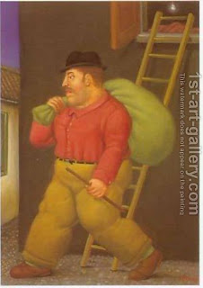

Bava Kamma 69 - Complete Ownership Required
Rabbi Yochanan said: "If a thief stole some property and the owner did not yet despair of recovering it, neither of them can consecrate it. The thief can't consecrate it because it is not his, and the owner can't consecrate it because it is not in his possession."
But what would be Rabbi Yochanan's source, being that there are Mishnas that rule otherwise?
His source is another Misha: One who steals a stolen item from a thief does not pay twofold payment. Why not? He doesn't pay the original owner a twofold payment because the article is not the owner's possessions - by the same token the owner can't consecrate it.